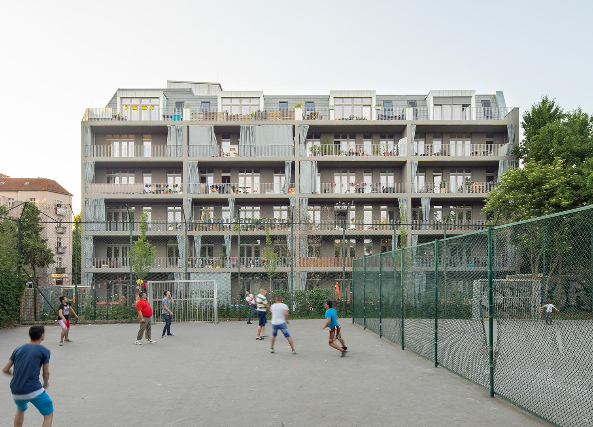
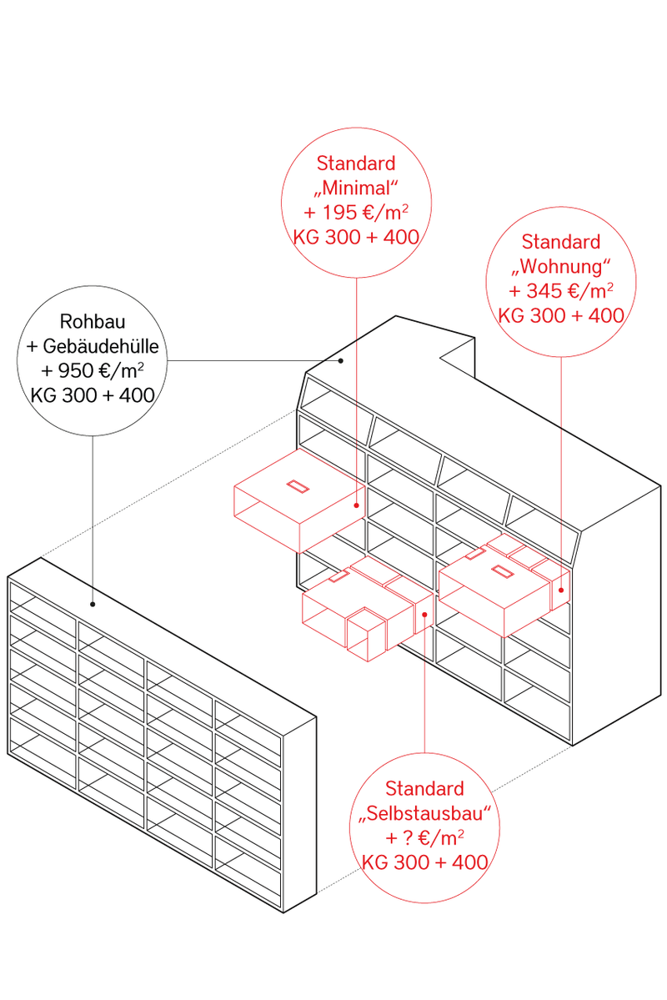
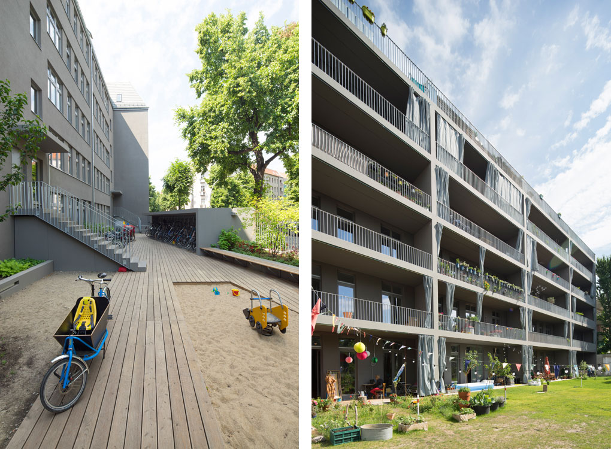

Foto: Andreas Friedel și Christoph Naumann, prin amabilitatea Praeger Richter Architekten.
Grup de construcție
AusbauHaus Neukölln
Berlin24 de locuințe și atelierePraeger Richter ArchitektenDeutscher Bauherrenpreis
Un grup de familii din Neukölln nu găsea locuințe bune la un preț rezonabil în Berlin. Așa că au cumpărat împreună terenul, s-au organizat într-o asociație și au construit preluând ei rolul dezvoltatorului. Fiecare familie e proprietară pe apartamentul ei.
Partea interesantă e cum au împăcat bugete diferite în aceeași clădire. Structura e comună, un fel de raft din elemente prefabricate: planșee cu deschidere mare și niciun perete portant în interiorul apartamentelor. Fațada are un ritm regulat de ferestre, așa că pereții interiori pot sta aproape oriunde. Toate apartamentele au trei metri înălțime și o loggie spre sud.
Restul a fost al fiecăruia. La finisaje, fiecare familie a putut alege între un apartament finisat, o variantă minimală și preluarea la roșu, pentru cine voia să lucreze singur, în ritmul și cu banii lui. Au ieșit 24 de locuințe și niciuna la fel. Regula, spusă chiar de arhitecți: puțină co-decizie la structură, multă libertate în interior.
A ieșit și mai repede. Prefabricarea și separarea clară a fazelor au scurtat execuția cu aproximativ 12 luni față de proiecte similare. A fost primul proiect de acest fel din cartier și a primit mai târziu Deutscher Bauherrenpreis, unul dintre cele mai importante premii germane pentru calitatea locuirii.
Față de Județului Housing: același drum, la altă scară. Un grup de viitori vecini, teren cumpărat împreună, rolul dezvoltatorului preluat de grup, fiecare proprietar pe apartamentul lui. Acolo 24 de locuințe, la noi cinci familii.